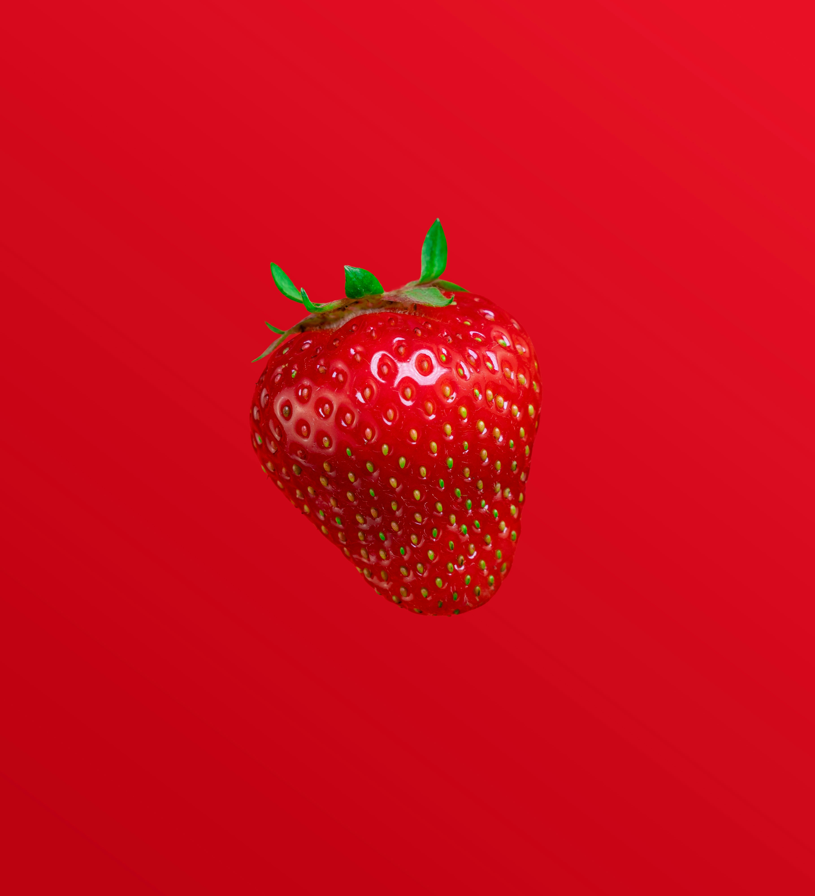

Data is beautiful and data is terrible. It is simultaneously helpful and dangerous. It is a construct that promotes progress, yet also can be the source of all human oblivion. Data binds and emulsifies modern society, and still is capable of crushing an individual and creating a dystopian future. How can these contradictions be possible?
A good place to start about how to understand data and its contradictions is to define it. Data is a tally or score. Technically plural, they are facts and statistics. Often it is expressed in the singular without significantly distorting the concept. A data set is many pieces of data clumped together, yet it is a whole. Data can be as simple as a count; such as the number of times you tap your foot at a book club meeting. It can also be as complex as the number of human interactions on earth in a given day.
Data has always existed, it is just how humans think about it that has changed. There are actually an infinite number of observable actions, moments and counts throughout the universe, let alone just on earth, and many were basically mystical and partly meaningless to all life on earth, including humankind, for millennia. There were a finite number of species, several different global extinctions, and an average amount of photosynthesis that took place on Pangea. However, most of it was effectively ignored. This is especially true of the smallest units or largest units of data. If you lived in medieval Europe it probably mattered how many potatoes you were able to successfully harvest so you knew if you could eat most of the 120 or so days during the winter. However, it probably didn’t matter the average amount of potato rot that your village farmers experienced as a whole over the past ten years. It also probably didn’t matter how many vitamins were in your particular daily potato, since people mostly did not understand what vitamins might be. Data existed in the form of knowledge, and it made our lives better when it was communicated and shared, yet it wasn’t quantified to a great extent. During most of human history, if you broadly understood the seasons and the risks associated with catastrophic dangers, or knew someone that did, then you would be okay. You did not need detailed data that dealt in minutia. Don’t touch dead bodies. Strange dogs are bad. Fire can be used to melt metal into useful tools. That’s it, you were pretty much good to go.
Then along came art. Art could arguably be said to have ‘metrics’ before many other human endeavors. Metrics are standards of measurement, and units of measurement can comprise data. Yet even the most advanced art was taught from master to protege in a manner that had more feeling than precision. A person developed their senses by modeling off of a professional in order to produce sculpture, architecture and painting. You knew something “worked” if your master said it did, your patron was happy, or else your creation clearly had not crumbled to the ground.
Bookkeeping and accounting could be said to hold data but its purpose was local. Don’t bankrupt the business. Buy low and sell high. The amount and types of data were necessarily limited to the types of goods and profit/loss statements. These were “observed” and maintained by a merchant class that probably did not care very much about making quantitative predictions about what could happen a year or years from now. Money lending is an extremely old profession, and the data from these records would have been meticulously curated. However, the data was in local and at most regional repositories.
Entire civilizations and empires were born, prospered and withered with these kinds of attitudes to the information that they generated. It actually worked out fairly well. Many professions, not just art, had master practitioners and the heuristics of what worked and what did not could be passed down to each generation. Often this was from parent to child, that most natural extension beyond one’s own limited human lifetime of 100 years at best. Data was percolating in a biological hard drive. It lived and thrived in the human brain but was unnamed in many ways and its full potential untapped.
The purposeful deliberate study of phenomena with predictions and results by humans started to change the status of data on the earth. In short, the founding of the modern sciences was profound in its impact. Alchemy as an art became chemistry, which required units of measure for observations. Astrology became astronomy, folklore became history and so on. If a person is going to study an event and predict what happens, then they necessarily need to record what existed prior and what existed after. The circumstances and the results. Writing had already been around for eons. However, instead of mere bookkeeping for only in many cases one port, one city, the records of what transpired take on a greater significance. A person will conduct an experiment and share the results effectively with the world. As modern printing developed this only set data on an exponential path. Books became a preferred storage medium as paper became less costly and bookbinding became less tedious and expensive. Reproducible results could be distributed and shared. The data contained in an algorithm (otherwise known as a recipe) will get you predictable results. A science book is full of facts that support premises that support arguments. Books, books, books became vessels full of data; many, many things that we know to be true because they have been rigorously tested and the resulting data does not lie.

During recent centuries how all of these known or assumed things can be recorded and stored has changed forever due to the fact that digital storage is effectively forever. Books fade and crumble, digits do not. Digital storage is cheap and only getting cheaper. Everything you do or say, especially on the internet, can be recorded and aggregated with millions of other beings. It is compiled, cleansed and analyzed. It is visualized with all colors imagined and those actually created with the compiled data.
So why exactly is data so wonderful? Today, in the modern age, it moves us forward. Data is wonderful because of the insights that it provides to engineering and other sciences. Dry statistics have more romance than the most delicate rain-kissed bouquet of flowers. This is because they are promises kept, with a healthy margin of error for good measure. Statistics have fed and clothed more people than any church.
Modern data analysis has quietly revolutionized the way we live, creating abundance not by making more, but by using what we have far more intelligently. From farms that use satellite data to grow more food with less water, to hospitals that harness patient data for faster diagnoses and personalized treatments, data is fueling smarter decisions across every industry. It helps businesses cut waste, governments deliver services more efficiently, and individuals make better choices in everything from fitness to finances. By turning raw information into insight, data analysis is unlocking innovation, driving progress, and spreading opportunity in ways that touch nearly every corner of modern life.
Data has also become, in the modern age, a fearsome monster that annihilates with precision or randomness. Statistics were used without mercy or remorse by Nazi Germany to quantify murder, mayhem and heartbreak. How many Jews could live in this town? Just take a sample of a one mile radius and you will get an answer that is “close enough.” This data was so meticulously recorded and stored that we still have much of it today. Other people could not possibly resist the efficiency and effectiveness of data to the point that they would risk being exposed, blamed, captured, executed. Strange measurements they used as well; were the skulls of Slavs really smaller? The records, the data, are all there even from the visits to the smallest, most obscure shtetl. Data used for evil purposes.
If one was to compare Amazon, inc. to the Nazis, then it would be a stretch. Fair enough. Yet the reach and impact of Amazon and other online retailers is staggering in consequences. They have contributed to abundance, and debt, in such a manner unimagined. Amazon and others can do this through data. Datasets lead to prediction models. How does Amazon know what you want to buy? Every purchase, every time something is not purchased, is saved as data to define you. Algorithms are automatically applied using millions of rows and columns. Predictions appear like magic in front of you, influencing how you spend your money and time. Influencing how many of your neighbors spend their money and time. Half the world, using online commerce or else being used by it for their data. That data is precious, that data is gold. Organizations, and your own government, don’t have to guess what you will buy, do or say. If there is data about you, or even someone a lot like you, it can be regressed, predicted or clustered.
Data is beautiful, yet awful in this visage. How can both be true? How humans recognize patterns in data is important to explaining the contradictions. It is part of our nature. Inescapable as the tide, this pattern recognition will always take place. We live, thrive and survive based on patterns and habits. When we see patterns in nature then we live to pass on our genes. What we recognize and become emotional about tends to happen. What happens when we get angry and act on that emotion? Generally bad things. Hateful things. Data and its patterns are only what humans make it. By being the best humans possible only then do we eliminate the possible bias and dangers associated with data analysis.
Yet now we are becoming “metahuman” and the consequences are yet to be seen. AI has taken data analysis and pattern recognition to the next level, turning what used to be slow, manual number-crunching into fast, intelligent insight generation. Yet not a human “generation.” Entire genomes of species are discovered faster and more accurately than a human can do. AI can spot patterns in huge, messy datasets — like images, text, or sensor data — that humans would miss, and it doesn’t just describe what happened, it predicts what’s likely to happen next. Whether it’s catching fraud, improving customer experiences, or helping doctors make better diagnoses, AI is making data smarter, faster, and more useful than ever. It’s like giving your data a brain — and it’s changing everything from business to healthcare to everyday life. Yet do we need to give it decision making power too? It is still too early to tell. Humans have boundless compassion and an odd hankering for malice. Computer chips have no such hang-ups.
Data has never been more valuable, and neither has our humanity. It is up to those of that insist on compiling it and using it to safeguard it. We are at an inflection point from which there is no turning back.